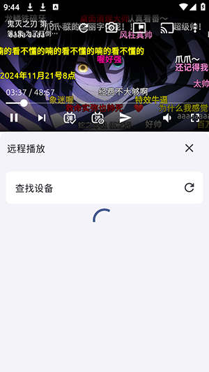

用了大半年 anich，说说它从新鲜到离不开的那些瞬间
从 1.5.17 版本追到现在，anich 作为一个聚合类番剧播放器，功能补全的节奏让我对"够用"两个字有了新的理解。
装 anich 的时候是冲着anich官网 主打的聚合源方案去的——不想在好几个 App 之间跳来跳去，一个壳子能把追的番都收了就行。那时候刚入 1.5.17，是一起看功能刚加进来的版本，界面比老播放器清爽不少，但说实话，前两个月我基本只用它播番，投屏、下载、磁力这些功能连碰都没碰过。
哪点越用越顺手：线路切换成了肌肉记忆
刚上手那会儿最头疼的就是"播到一半卡成 PPT"——聚合源天生线路质量参差，同一条番剧在不同源上的速度差得离谱。起初我以为是自己网络的问题，重启路由器、换 Wi-Fi、关后台能试的都试了，后来翻 anich文档 才知道，这个应用的线路概念就是为这种场景设计的。
现在线路切换已经成了肌肉记忆：点开一集先听两秒片头，画面开始卡立刻切下一条线路，不出五次总能找到一条流畅的。这个动作花不了五秒，但把"看番体验"从撞大运变成了可控。说实话刚知道线路这个概念的时候觉得是个 bug——好好的播放器为什么还要手动选源？但用了半年下来才明白，聚合播放器的核心价值恰恰就在这里：它不生产内容，它解决的是"能播到"和"流畅播"之间那段没人管的间隙。
哪点越用越烦：下载链路的脆弱性
如果说播放体验是 anich 的强项，那 anich下载 就得算它最让我闹心的地方。1.5.25 之前我下载失败的频率大概是每三次下一次会出问题：有的任务进度跑到 80% 突然报个"未知错误"就停了，有的 HLS 分片看起来下完了但文件根本打不开，最离谱的是遇到过重定向的链接——任务刚启动三秒就秒退。
官方在 1.5.25 一口气修了三类下载问题，重定向处理、HLS 分片校验、状态码判断逻辑都补上了。升级之后确实好了不少，但我发现自己已经养成了一个习惯：重要的番剧从来不只下载一份，要么下完立刻本地备份，要么干脆开着在线播放等看完再删。不是不信任，是被之前的假下载坑过几次之后，对"下载完成"这四个字本能地多了一道保险。

哪个功能成了每天离不开的：投屏 + 追番日历的组合
投屏这个功能我起初以为是给"懒得拿手机看"的人准备的，直到上个月家里电视装了投屏接收、路由器也关了 AP 隔离之后，它才真正成了我每天必用的东西。播放页右上角那个电视图标，点一下就能搜到电视，手机变遥控器、进度自己走，体验比我之前用的同类型播放器顺——之前那个经常搜不到设备，anich 这边成功率几乎是百分百。
但真正让投屏好用的，是追番日历。每周几哪部番更新，日历上一目了然，点进去直接开播，然后投到电视上。这套组合流程现在是我睡前的固定动作：打开日历、点开最新一集、投电视、放下手机。单独看这两个功能可能都不算惊艳，但凑在一起就形成了一个闭环——从"我想看什么"到"我在大屏上看着了"，中间不超过三步。
哪个碰都没再碰：一起看
一起看功能在 1.5.17 的更新日志里写得很显眼，我第一时间就跟异地的朋友试了一次。房间创建、分享房号、加入、同步进度，流程跑通了，弹幕也跟着一起飘——但之后就再也没开过。原因很简单：能凑到同一个时间一起看番的机会太少了，要么他加班要么我有事，偶尔约上一次也常常因为其中一方网络差导致全员缓冲。
这个功能的设计逻辑没问题，异地同步观影确实是真实需求——但对我这种作息不规律的人来说，它更像一个"有了挺好但我用不上"的功能。我猜它在学生党和情侣用户那里的使用率应该比我高得多。
观感修正：当初高估了"聚合源的覆盖能力"
刚装 anich 的时候我以为有了聚合源就等于有了"全网番剧索引"，搜不到的番大概率是我关键词没换对。但用了半年下来我发现，聚合源的覆盖波动比想象中明显——某个源临时维护，一批番就会集体"消失"，过几天源恢复了又突然冒出来。极冷门的作品在聚合源里缺席是常态，这不是应用的锅，但也意味着我不能把它当成唯一的番剧搜索入口。
当初我低估了这件事的影响：以为聚合源只是"多一个搜索渠道"，其实它更像一个"动态变化的索引层"——你能看到什么，取决于当下哪些源在线、这些源收录了什么。现在我的做法是先在 anich 里搜，搜不到就换关键词、换索引入口、过两天再试，实在没有再去别的地方找。这套应对习惯是时间磨出来的，刚上手那阵子还为"搜不到番"跟自己生过气。
去留结论：暂时不卸载，但有几个信号会触发替换
anich 现在是我手机上唯一的番剧播放器，短期内没有卸载的计划。线路切换的肌肉记忆、投屏加日历的闭环、下载链路修完之后的稳定性——这三点构成了我留下来的核心理由。
但有几个信号出现的时候，我会认真考虑换一个：第一，聚合源大面积失效而官方长期没有补充新源，导致能搜到的番越来越少；第二，下载侧再次出现大规模的假下载或状态码错误，而且连续两个版本没修；第三，投屏功能开始频繁搜不到设备或连接失败，回退到之前那种撞大运的状态。
除了这些硬指标之外，anich 还有一个让我愿意继续留着它的原因：更新日志的节奏很实在。从 1.5.11 支持磁力链接在线播放，到 1.5.17 加一起看，再到 1.5.22 的磁力手动资源选择和 1.5.25 的下载三件套修复——版本迭代不是在堆花哨功能，而是在一步步把用户真会用到的点补完整。这种"哪里痛治哪里"的开发节奏，比一次性堆二十个新功能然后让我自己摸索要舒服得多。
整套体验从聚合源里的"下载官网"就能拿到，真要挖一些冷门功能的时候还是得去查项目文档。GitHub 上能找到完整的开源资料和版本脉络，国内开发者如果觉得访问慢，直接切到 Gitee 或 GitCode 就行，三个仓库内容是同步的。